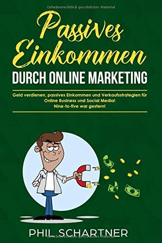

Welcome to Passives einkommen
- Passives-Einkommen-Verdienen.de
2020.11.28 10:37
Mein Weltportfolio mit Sparplan Börse Börse für Einsteiger Guide Börse für Fortgeschrittene Börse für Experten Blog Einen Blog gründen Besucher erreichen Geld verdienen Einnahmenreport Blog Technik Wissen Für Selbständige und Angestellte Betrieb eines eigenen Onlineshops Aktuelle Umfragen Sparen Geld sparen Zeit „sparen“ Girokonten im Vergleich Kreditzinsvergleich Börse für Fortgeschrittene
Lohnt es sich noch in Gold zu investieren? – das sollten Privatanleger bei einem Investment in Gold wissen!
Marco Eitelmann 0Die Auswirkungen der Corona-Pandemie sind nach wie vor auf den weltweiten Finanzmärkten zu spüren, auch wenn diese in den vergangenen Monaten durch extreme Interventionen und nie dagewesenen Geld“druck“aktionen der Notenbanken immer weiter steigen. Die momentane [weiterlesen ]
Börse für FortgeschritteneMein Weltportfolio Alle wichtigen Anlageklassen in einem sinnvollen, ausgewogenen und konservativen Verhältnis per Wertpapier-Sparplan
Marco Eitelmann 1Kurze Hinweise zu meinem Portfolio: Hier gebe ich Euch gerne Einblicke in mein Depot, das ich monatlich per Sparplan bespare. Es handelt sich um ein langfristiges und reines Buy and Hold Portfolio. Es sieht bis [weiterlesen ]
Börse für FortgeschritteneCovid-19 hat nicht meine Anlagestrategie verändert Jedoch die Notenbanken und ihre Reaktionen darauf!
Marco Eitelmann 0Noch vor wenigen Monaten hatte ich eine Anlagestrategie auf ein simples 1 ETF Portfolio umgestellt. Vor der vollständigen Tilgung meiner selbstgenutzten Immobilie, lief jahrelang sehr erfolgreich und schwankungsarm mein Weltportfolio. Warum nutze ich die 1 [weiterlesen ]
Für Selbständige und AngestellteLösung: Wenn in Excel die Pfeiltasten in den Kästchen nicht mehr funktionieren und stattdessen scrollen
Marco Eitelmann 0Mir ist es vor einigen Tagen zufällig passiert, dass ich in Excel plötzlich nicht mehr mit den Pfeiltasten von Kästchen zu Kästchen springen konnte. Stattdessen wurde der Scrollbalken bei Nutzung der Pfeiltasten aktiv und erzeugte [weiterlesen ]
Börse für ExpertenSoll ich einen Rohstoff ETF bzw. ETC zur Diversifikation kaufen? – Warum ein solches Investment bis auf Edelmetalle langfristig fast garantiert zu Verlusten führen wird!
Marco Eitelmann 0Leider hört man immer noch viel zu oft, dass es sinnvoll wäre in ein breit diversifiziertes Portfolio langfristig auch Rohstoffe zu mischen. Selbst einige Mischfonds, Vermögensverwalter, Multi Asset ETF und Robo Advisor nutzen diese Möglichkeit. [weiterlesen ]
Börse für FortgeschritteneMeine persönliche konservative 1-ETF-Strategie kombiniert mit meinem gesamten Anlagevermögen
Marco Eitelmann 2Update: Ich bin zu einem neuen Weltportfolio zurückgekehrt, da die neusten, historischen und absolut extremen Entscheidungen der Notenbanken aufgrund von Covid-19 für mich in Bezug auf diese Anlagestrategie nicht mehr zusammenpassen. Dennoch wird die Strategie [weiterlesen ]
Börse für FortgeschritteneBrauche ich einen globalen oder regionalen Small Cap ETF in meinem Depot als Ergänzung zum MSCI World oder einem FTSE All World ETF?
Marco Eitelmann 0Oft bekommt man leider immer noch Sätze zu hören wie: „Small Caps braucht man nicht, sie machen keinen Unterschied in der langfristigen Performance aus“ oder „Small Caps haben so wenig Marktkapitalisierung, Nebenwerte sind unnötig als [weiterlesen ]
Börse für FortgeschritteneReicht nur ein Aktien ETF allein zur langfristigen Geldanlage per Sparplan aus? – Wenn ja, welchen würde ich wählen?
Marco Eitelmann 1Ich werde öfter gefragt, ob es nicht einfach ausreicht einen einzelnen Aktien ETF zu kaufen und damit langfristig sein Vermögen aufzubauen. Die Antwort lautet ganz klar „Ja es ist möglich“! Zudem wirst Du selbst [weiterlesen ]
Börse für FortgeschritteneReal Estate Investment Trusts (REITs) – Sind Immobilienaktien eine sinnvolle Diversifikation für ein langfristiges Depot?
Marco Eitelmann 1Die ersten Immobilienaktien kurz „REITs“, gab es erstmals 1960 in den USA. Es folgten weitere Länder, bis sich letztendlich auch im Jahr 2007 Deutschland mit seinen „G-Reits“ der Entwicklung anschloss. Das gesamte REITS-Konstrukt stellt eine [weiterlesen ]
Börse für FortgeschritteneWie hätte sich mein langfristiges Portfolio im Crash 2007-2008, 2000-2003 und 1929 entwickelt und welche Verluste wären dabei im Depot entstanden?
Marco Eitelmann 2Ich habe in diesem Beitrag bereits unter Berücksichtigung von Extremwerten für allen in meinem Portfolio enthaltenen Anlageklassen mein Gesamtrisiko und die möglichen Verluste berechnet, welche nach meiner Einschätzung in einem größeren globalen Crash [weiterlesen ]
Beitrags-Navigation
1 2 … 38Webseite durchsuchen:
Persönliche Empfehlung:
Ich nutze seit mehr als 15 Jahren das kostenlose Girokonto und Depot von
comdirect*
Anzeige:
Themen die Dich auch interessieren könnten:
Für sparsame Investoren und Viel-Trader:
Das Depot von Trade Republic ermöglicht den Kauf von über 6500 internationalen Aktien und 40000 Derivaten sowie 500 ETF für nur EINEN Euro Orderkosten pro Kauf- und Verkaufsorder!
App kostenlos herunterladen und das Depot von Trade Republic testen*
Neueste Kommentare
Marco Eitelmann bei Kleingewerbe Abschreibungen (Afa) mit oder ohne Umsatzsteuer abschreiben. Beispiel PC Marco Eitelmann bei Amazon Paket laut Amazon zugestellt aber noch nicht da, was heißt bei Transportdienst: „DPSTD, Sendung“ und wo ist mein Paket geblieben? Petra dött bei Amazon Paket laut Amazon zugestellt aber noch nicht da, was heißt bei Transportdienst: „DPSTD, Sendung“ und wo ist mein Paket geblieben? Werner bei Kleingewerbe Abschreibungen (Afa) mit oder ohne Umsatzsteuer abschreiben. Beispiel PC Robert Rennebach bei Betrug bei Quoka Kleinanzeigen, per Überweisung Vorkasse auf ein deutsches Inlandskonto gezahlt und keine Ware erhalten, die geringe Wahrscheinlichkeit trotz Anzeige bei der Polizei sein Geld wieder zu sehenBuch-Tipp:
Nutzungshinweise für diese Webseite
Der Inhalt von passives-einkommen-verdienen.de besteht aus von mir im Netz gesammelten Informationen, eigenen Erfahrungen, meinem Wissensstand sowie meiner persönlichen Meinung. Alle Inhalte dieser Webseite dienen nur zu allgemein informellen Zwecken und es besteht kein Gewähr auf Aktualität, Richtigkeit und Vollständigkeit der bereitgestellten Informationen. Beiträge bzw. Texte zum Thema Börse und Wertpapiere stellen keine Anlageempfehlungen dar, sondern beruhen auf meiner persönlichen Meinung und Einschätzung. Wer nach diesen Vorstellungen handelt kann einen Totalverlust seines eingesetzten Kapitals und in Einzelfällen darüber hinaus riskieren! Ich gebe hiermit bekannt ganz oder teilweise in die von mir vorgestellten Wertpapiere investiert zu sein. Ich würde jedem Börsenteilnehmer generell empfehlen ausschließlich in Wertpapiere zu investieren, welche er zu 100 Prozent versteht, deren komplette offizielle Verkaufsunterlagen bzw. Bedingungen des jeweiligen Anbieters er gelesen und ebenfalls verstanden hat und sich den Risiken des jeweiligen Wertpapiers absolut bewusst ist und diese auch im Falle des möglichen Eintretens finanziell verkraften kann!
Über den Autor
Mein Name ist Marco Eitelmann und ich bin selbständiger Blogger und seit 1999 an der Börse mit eigenem Kapital durchgehend aktiv. Über die Jahre habe ich mich durch eine ständig begleitende fachliche Weiterbildung in Eigenleistung zum Experten auf dem Gebiet der langfristigen Geldanlage an den Kapitalmärkten entwickelt. Durch meine Selbständigkeit im Onlinemarketingbereich verfüge ich ebenfalls über ein hohes Maß an Fachwissen, das ich hier mit Euch teilen möchte. Mehr Details zu mir findet Ihr auf meiner Autorenseite .
Kontakt und Datenschutzbelehrung
Impressum
Datenschutzerklärung
* = Affiliate Link Dies ist ein Link mit Werbung für z.B. Produkte und Dienstleistungen
Copyright © passives-einkommen-verdienen.de - Marco Eitelmann
Diese Webseite benutzt Cookies um ihren einwandfreien Betrieb zu gewährleisten. Stimmst Du dem zu, gebe bitte ein "Ok". Weitere Infos findest Du in der Datenschutzerklärung. Ok Datenschutzerklärung